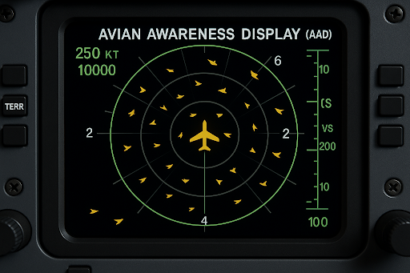
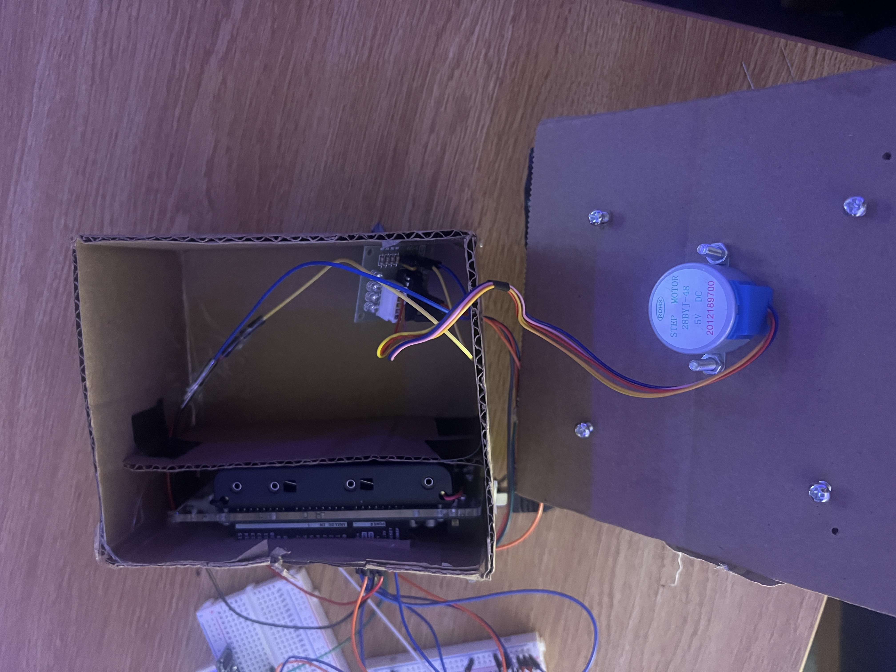
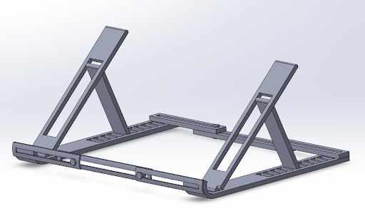
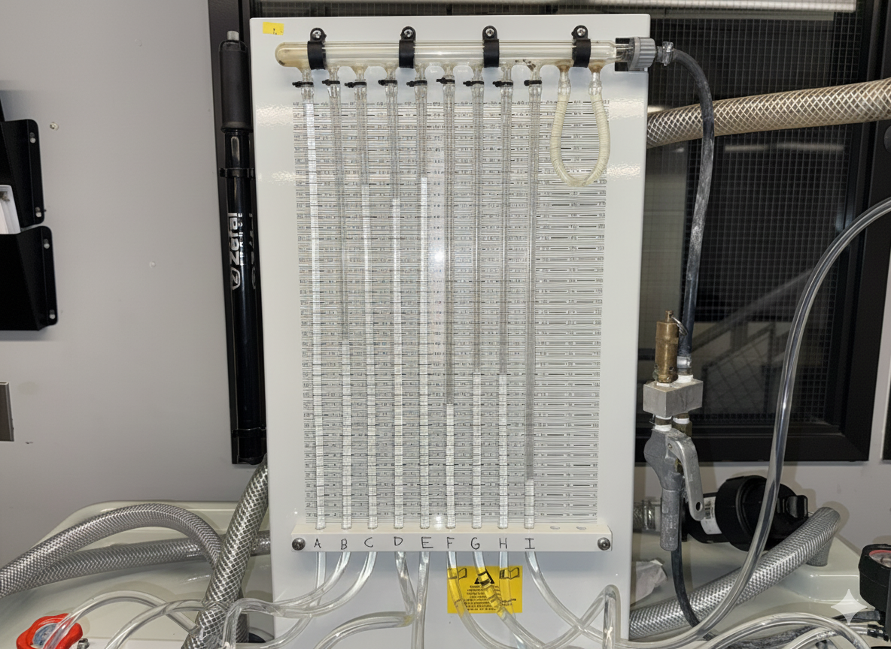
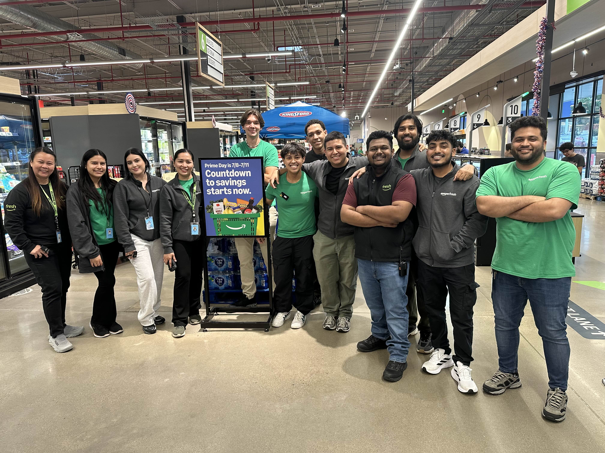

Fall 2025
Real-Time Avian Radar
Interface Concept
As part of NASA’s L’SPACE NPWEE program, I am working with Team #2 on a real-time avian radar interface concept
for airspace management and aviation systems. The project combines systems thinking, visualization, and engineering
design in a NASA-style proposal environment, with a focus on safety, usability, and integration with existing tools.

Mechatronics
Color-Tracking
Turret System

Designed a turret that detects and tracks targets based on color, then fires once it achieves a lock. The system
integrates actuators, sensors, digital logic, and an embedded controller (Arduino) while applying core concepts
from a mechatronics course: signal conditioning, feedback control, and user interface design.
Research & Design
Bandage Peeling
Robot & Adhesion

Working on a bandage peeling robot concept that studies adhesion and peel behavior. Exploring models such as JKR
and cohesive zone approaches, using simulated and experimental data to better understand how to control peel forces,
reduce discomfort, and tune motion profiles for medical applications.
Mechanical Design
Adjustable Laptop Stand
Structural Analysis

Developed a mechanical laptop stand design and evaluated stability and strength through overturning moment checks,
pin sizing, and stress analysis. Considered Von Mises stress, buckling, and fatigue to ensure the stand can support
a heavy laptop at multiple angles without failure over time.
Measurements & Labs
Instrumentation &
Experimental Methods

Completed multiple measurement labs at Rutgers involving strain-gauge beams, pressure/flow experiments, and
LabVIEW-based data acquisition. Focused on uncertainty analysis, calibration, and using experimental data to
support engineering decisions in design and analysis.
Work Experience
Amazon Fresh
Grocery Associate

As an Amazon Fresh Grocery Associate, I supported high-volume order fulfillment and in-store operations. I picked,
staged, and organized online grocery orders with a focus on accuracy and speed, handled perishable items to quality
standards, and helped customers navigate the pickup process. The role strengthened my attention to detail, time
management, and ability to stay calm and organized in a fast-paced environment.